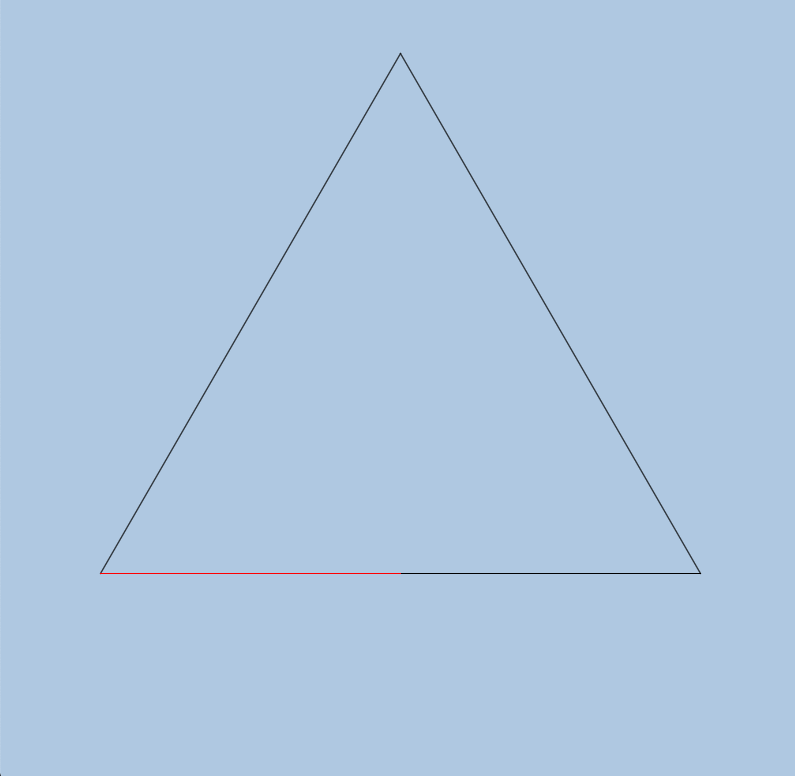
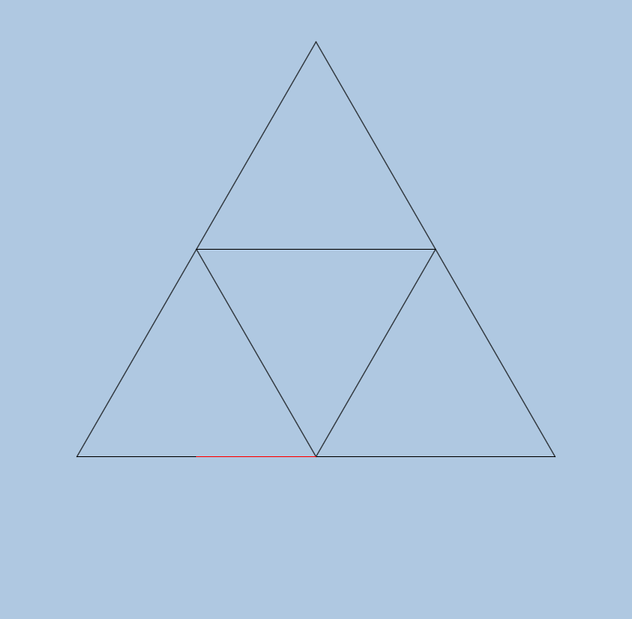
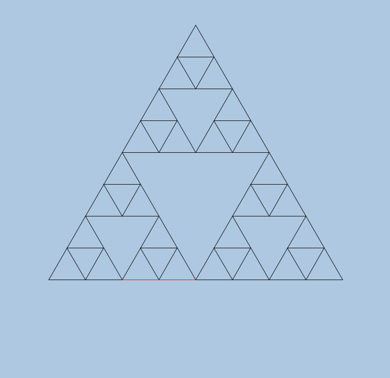
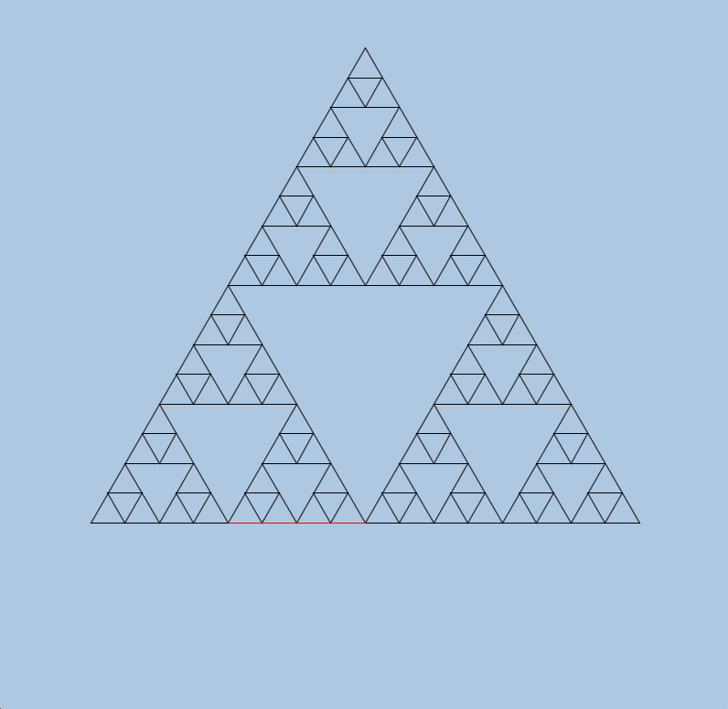

Due date
This assignment is due on Tuesday, November 2 at 2 AM.
Project: Turtle graphics
For this program, we will write a turtle graphics library in Java and use it to draw an interesting recursive figure called the Sierpinski triangle.
Learning objectives
-
Start to familiarize ourselves with Java’s graphics libraries
-
Learn to write a reusable "library"
-
Learn to use recursion to create fractal drawings
Background: Graphics in Java
Computer graphics is a rich and complex field. We will only be scratching the surface of it in this (and subsequent) assignments. Graphics is also a great source of programming ideas; one of the main drivers for the development of object-oriented programming was to help write code for graphical user interfaces.
Compared to other languages, Java is (for the most part) a very convenient and
effective language in which to use graphics. On the other hand, there are a
lot of options, and using graphics can be more manual than using e.g. Python
with tkinter. However, the results will also usually be better, and much
faster.
AWT and Swing
One of the annoying things about Java is that the graphics libraries have evolved over the years of Java’s existence, and continue to do so. These libraries are grouped into several distinct collections.
The first group of libraries are the "AWT" libraries. AWT stands for Abstract Windowing Toolkit. AWT is the original set of Java graphics libraries, and implement most of the basic GUI (graphical user interface) functionality that is needed for applications. AWT objects are implemented using native graphical "widgets", so that AWT applications look "natural" on any operating system. This also means that there can be slight differences in functionality on different operating systems, though AWT tries to make these as small as possible.
The Swing libraries are a later development. These are implemented in pure Java and are supposed to work identically on all operating systems. Swing has historically been slower than AWT, but with better compilation techniques, this is not likely to be an issue in practice any more.
There are also newer Java graphics libraries, notably JavaFX. JavaFX is a good choice for programmers doing real application development, but it’s overkill for our purposes, so we will restrict ourselves to AWT and Swing for the graphics programs in this course.
Some classes we’ll use
See the Java API for more details about all of these classes. However, you probably won’t need to do that, since following the examples given in the sample files should be enough to complete the assignment.
Graphics2D
The documentation for this class is here. This is an AWT class.
This class represents the "graphics context" of an application. This
includes things like the color, the line width, etc. Also, drawing on a
graphical surface is done via the Graphics2D context.
Color
The documentation for this class is here. This is an AWT class.
This class represents colors in various ways. The most usual way to use it is
either using the RGB (red, green, blue) system. The most common way to specify
RGB colors is using a one-byte positive integer for each color (i.e. a number
between 0 and 255). Alternatively, a small number of colors are predefined
constants e.g. Color.BLACK and Color.RED.
BasicStroke
The documentation for this class is here. This is an AWT class.
This class defines attributes of lines; a BasicStroke object can be
constructed with a particular line width, for instance. This object could be
passed to the setStroke method of a Graphics2D object to set the parameters
of lines that are subsequently drawn using that graphics context.
Line2D
The documentation for this class is here. This is an AWT class.
This class represents line segments on a 2D surface. The Line2D.Double()
constructor creates a line from the (x, y) coordinates (where each coordinate
is specified as a double) at either end of the line segment.
Rectangle2D
The documentation for this class is here. This is an AWT class.
This class represents rectangles on a 2D surface. The Rectangle2D.Double()
constructor creates a rectangle given the following double values:
-
the X and Y coordinates of the upper left-hand corner of the rectangle
-
the width and height of the rectangle
JFrame
The documentation for this class is here. This is a Swing class.
This class is basically a container class that represents a window on the
screen. It has its own attributes (width, height, title) and can also contain
other graphics objects (like the TurtleCanvas described below).
JComponent
The documentation for this class is here. This is a Swing class.
This class provides a drawing surface that allows us to (among other things) draw lines on the screen.
The Turtle graphics canvas
About turtle graphics
Computer graphics in its most general sense is quite complicated, so efforts have been made over the years to simplify it to allow less sophisticated users [1] to make interesting images. One of these approaches is called turtle graphics. The idea is that you are presented with a two-dimensional drawing surface, upon which an icon called a "turtle" is present. This could be an image of a turtle, or anything else e.g. just a point, an arrow, etc. Ideally the turtle icon will have an orientation showing which way is "forward" from the perspective of the turtle. The idea is that the turtle holds a "pen" which can be in the up or down position. If it’s up, when the turtle moves, nothing is drawn. If it’s down, when the turtle moves a line is drawn which traces out the movement of the turtle. There are commands to move the pen to the up or down position, to move the turtle forward or to a particular absolute location, and to rotate the turtle by some number of degrees. With just these commands, very complex designs can be made, as we’ll see.
Turtle graphics was made famous in the Logo programming language in the late 1960s. This was a language designed to teach programming concepts to children, and it included built-in support for turtle graphics.
The objective of this section is to write a Java "library" that allows us to do turtle graphics easily. One limitation is that our library won’t have a turtle icon, but we can still manage to make interesting drawings.
|
The term "library" is almost never given a formal definition in any programming language, but it is used informally to refer to some body of code that contains functionality that can be used outside of the library. More formal terms like "classes", "packages" and "modules" are given more precise meanings in programming languages. In this case, our "library" will be the classes contained in a single Java file. |
Coding notes
Template code
We are supplying you with a template file for this section called
TurtleCanvas.java. This contains the
definitions of the TurtleCanvas and Line classes and stubs or partial
implementations for methods you need to write. We’ve written // TODO
comments where you need to add code (and you should remove these comments when
you do). You can also add extra methods as you see fit.
We are also supplying you with a file called
TurtleDemo.java. This file will use the
turtle graphics code in TurtleCanvas.java to make a simple drawing. After
you’ve written your TurtleCanvas.java file, you can test it by compiling
TurtleDemo.java and running it.
Finally, to help you get started, we’re supplying a file called
TestCanvas.java. This file will put up a
window on the screen and draw some lines on it. You can adapt the code in this
file to help you write your TurtleCanvas code.
Classes
-
The
LineclassWe’ve provided the implementation of a trivial class called
Linewhich represents a line segment in 2D space. It’s basically just two (x, y) pairs ofdoubles, representing the two points which are the endpoints of a line. The definition is interesting:record Line (double x1, double y1, double x2, double y2) {}This is the entire definition. It uses a comparatively new Java feature called record classes. [2] These are just a shorthand way of writing classes that contain several immutable fields, all of which are set from values in the constructor. To create a new
Line, do this:// Assume that doubles x1, y1, x2 and y2 have been defined. Line myLine = new Line(x1, y1, x2, y2);
You can access (but not change!) the components of a record like this:
double x1 = myLine.x1(); double y1 = myLine.y1(); double x2 = myLine.x2(); double y2 = myLine.y2();
Records are not essential, but they are nice because they dramatically reduce the boilerplate code needed for very simple classes. Also, you can add methods to record classes like you would to a normal class, and even add a constructor. In our case, we will use the default constructor, which just sets the field values based on the input arguments.
Lines will be useful to use because our drawings will be a set of lines. -
The
TurtleCanvasclassThis class represents a drawable canvas which is displayed in a separate window. There are methods to do all the standard turtle graphics operations, which are described in the next section.
The
TurtleCanvasclass extends theJComponentclass described in the previous section.One peculiarity of this turtle canvas implementation is that the last line drawn should be in a different color from the rest of the lines; we call this the "highlight color". This is done partially as a debugging aid.
TurtleCanvas: fields
We will allow you to define whichever fields you consider necessary for the
TurtleCanvas class. Note that you will have to at a minimum keep track of
the position and orientation of the "turtle" on the canvas. The position is
where the turtle is located, and the orientation is the direction of movement
when the turtle moves forward. You do not need to represent the turtle as an
icon (or even as something visible).
You will also need to have a field to store lines that are part of the image; these lines will be drawn by special methods described below.
TurtleCanvas: methods to write
All these are methods of the TurtleCanvas class.
The TurtleCanvas constructor
This constructor has as arguments the window width and height (in pixels) and
sets up the fields of the TurtleCanvas object.
drawLine
This method has as arguments a 2D graphics context (which is necessary in order
to draw anything) and a Line object. It draws the line on the screen using
the coordinates in the Line object.
|
This is the only method in the class that should do any actual drawing of lines. Other methods that "draw" lines actually just create and store lines that will eventually be drawn by this method, or they work by calling this method. |
forward
This moves the "turtle" forward by a given distance. Note that you have to take into account the position and orientation of the turtle. If the pen is up, you won’t actually draw a line, but you will have to move the turtle to the final point.
Note that for this method "drawing a line" doesn’t actually mean drawing a
line; it means creating a Line object and storing it in the object so it can
be drawn later.
rotate
This method rotates the orientation of the turtle by a given number of degrees. (If you are storing the orientation in radians, you’ll have to do the appropriate conversions.)
Note that the positive rotation direction is counterclockwise, so a rotation of 90 degrees will change the orientation from e.g. "going to the right" to "going up".
clearLines
This method clears the list of lines stored in the object. (We won’t actually need this method for this assignment, but it might be useful for other programs using the library.)
penUp
This sets the pen state to up i.e. not drawing.
penDown
This sets the pen state to down i.e. drawing.
moveTo
This moves the turtle to a specified point on the canvas without drawing.
setAngle
This sets the absolute orientation of the turtle in terms of an angle from the
horizontal axis, going counterclockwise. So setAngle(135) would set the
orientation to 135 degrees from the positive X axis, which would be pointing
diagonally to the upper left.
setBackground
This sets the background color of the canvas.
setHighlight
This sets the highlight property of the canvas. If it is true, then the last
line drawn will have a different color (in this case, red) than the rest of the
lines. If false, all lines have the same color. This is useful when
debugging.
paintComponent
This method (which is protected because that was the access of the method in
the superclass) is the master method which handles drawing everything on the
canvas. It’s basically a "repaint" method which is called whenever the canvas
needs to be redrawn. An example of this is when the window is minimized and
then maximized, or when part of the window is covered up by another window and
then uncovered, etc.
This method has to do these things:
-
set the background color of the canvas
-
reset the initial position and angle of the turtle
-
draw all the lines that have been specified by the turtle graphics commands (using the
drawLinemethod)
You could conceivably draw the lines directly in this method without using the
drawLine method, but that would require duplicated code, so don’t do that.
|
You can use the sample code in TestCanvas.java as a model for this method.
Also note that this method should use the color black for all lines, with the
exception of the last line drawn, which should be red if the highlight property
is true; if it’s not, then it should also be black.
Resetting the position and angle of the turtle is important because the job of
paintComponent is to draw the entire drawing, not to add to an existing
drawing.
Drawing Sierpinski triangles
Now that you’ve written the code to implement the turtle graphics canvas, it’s time to do something interesting with it! We are going to be drawing a well-known fractal shape called the Sierpinski triangle. Conceptually, it’s a triangle with smaller triangles drawn inside it, and even smaller triangles drawn inside those triangles, ad infinitum. Of course, we can’t draw triangles to infinite depth due to both computational and display limitations, but if we go enough levels deep, you wouldn’t be able to distinguish the resulting images from a "real" Sierpinski triangle.
A good reference on Sierpinski triangles is this Wikipedia page. We will give you an algorithm for computing Sierpinski triangles below, so you won’t need to consult the page for that.
What they look like
We will now present a gallery of images of the Sierpinski triangle at various "depths" of recursion. Smaller numbers mean that we stopped the recursive process earlier, while larger numbers mean that the recursive process ran on longer. Later drawings contain earlier drawings, but have more triangles filled in.
Note that there is one red line per image; this is the last line that was drawn. It’s not necessary for your program to have this line in the same location as our drawings do.
Depth 0

Depth 1

Depth 2
Depth 3

Depth 4

Depth 7

At this point, the Sierpinski triangle is basically complete from a visual standpoint. Notice the self-similarity of the image, where there are three smaller copies of the entire image embedded inside the image. This is what makes it a fractal.
How to generate them
There are undoubtedly many ways of generating Sierpinski triangles to any given (non-negative) depth. We will present a simple algorithm here, which we would like you to follow. The main reason we want you to follow our algorithm is to reduce frustration; making fractal drawings is awesome when the output is what you want it to be, but it can be unbelievably frustrating when it’s a little bit wrong, especially since "a little bit wrong" at one level usually translates into "a giant mess" at a deeper level. (Also, we will be more able to help you debug your code if you follow our algorithm.)
We will assume that you have written the following methods:
-
triangleUp: this takes a single argument (the side length of a triangle) and draws an upward-pointing triangle. -
triangleDown: this takes a single argument (the side length of a triangle) and draws a downward-pointing triangle
Both of these methods are only a few lines of code when using your turtle graphics canvas.
Here is pseudocode for the algorithm to draw a Sierpinski triangle to depth
n.
-
Draw an upward-pointing triangle using
triangleUpthat surrounds the entire Sierpinski triangle. This is the only upward-pointing triangle you will draw! All the rest will be downward-pointing triangles. (Look at the above images to convince yourself that this is reasonable.) -
If the depth
nis zero, you are done! Otherwise, do the following steps.-
Draw a downward-facing triangle in the center of the drawing area so that it touches the edges of the surrounding triangle. We’ll call this triangle the "core triangle" for this level.
-
Decrease the triangle size by a factor of 2. Subtract 1 from the level.
-
Now you have to repeat the entire drawing (not including the initial upward-facing triangle) in three places: in the triangular area above the core triangle, in the triangular area to its left, and in the triangular area to its right. (These are three recursive steps.) In each case, you first have to lift the turtle pen up, move to the correct place to start drawing, put the pen down, and do the drawing.
-
You should expect to do a bit of trial and error to get this right, but the working code is not long or convoluted. (Our solution for the recursive function is about 40 lines of code.)
Coding notes
Template code
We are supplying you with a template file for this section called
Sierpinski.java. This contains the
definitions of the Sierpinski class and stubs or partial implementations for
methods you need to write. We’ve written // TODO comments where you need to
add code (and you should remove these comments when you do). You can also add
extra methods as you see fit.
Methods to write
The methods you need to write or complete are:
-
the
Sierpinskiconstructor -
the
triangleUpandtriangleDownmethods, both of which are very short -
the
drawInternalsmethod, which implements the recursive part of the drawing algorithm described above.
In the Sierpinski constructor, you need to create the turtle canvas, set the
background color (any color that makes it easy to see the lines is OK), draw
the bounding upward-pointing triangle, and call the drawInternals method to
finish the drawing.
Compiling and running
Like most Java programs, this program is very easy to compile and run.
Put all the code into a directory called turtle (which is the name of the
package). Then, from the directory above turtle, do this to compile the
files:
$ javac turtle/*.java
To run a program (say, from Sierpinski.java), do this:
$ java turtle.Sierpinski 4
This program takes one command-line argument, which is an integer >= 0. Try using different numbers. An invalid input should give rise to a usage message and exit the program.
Incremental development
At this point, you should have enough experience with incremental development to be able to figure out which parts of the code to develop first. Remember: there is no hard-and-fast rule for how to do this! Different programmers will do things differently, but try to write your code so you can test parts of it as soon as possible.
Testing
First, compile and run the file
TurtleDemo.java. against your
TurtleCanvas.java code and check that it works correctly. This program, when
run, will draw a set of 10 squares, all anchored to a single point in the
canvas, but the squares will spread out evenly around that point. Also, the
canvas will initially be blank, but every time you click the left mouse button
in the canvas, another line will be drawn until all 10 squares are visible.
The most recently-drawn line will be in the highlight color (here, red) and the
rest of the lines will be black.
|
Make sure that this works before starting work on the Sierpinski triangle code. |
Once this is working correctly, write the Sierpinski triangle code and compile
the full program. Be aware that, unlike the TurtleDemo.java program, the
Sierpinski program is non-interactive; it generates an image, displays it all
at once, and leaves it up. (You can close the window to exit the program.)
What to hand in
Please submit these files to CodePost as Assignment 4:
-
TurtleCanvas.java -
Sierpinski.java
[End of assignment]
2021 California Institute of Technology. All rights reserved.